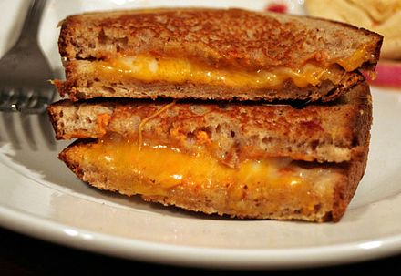

Grilled Cheese

Description
A grilled cheese (sometimes known as a toasted sandwich or cheese toastie) is a hot sandwich typically prepared by heating one or more slices of cheese between slices of bread, with a cooking fat such as butter, on a frying pan, griddle, or sandwich toaster, until the bread browns and the cheese melts.
Ingredients
- Bread
- Butter
- Cheese
- (optional) Tomato Soup
Steps
- Spread butter on one side of each piece of bread
- Place one piece of bread butter side down in a hot pan
- Place shredded cheese on top of bread in an even layer
- Place second piece of bread on top of cheese with the butter side up
- After 3-4 minutes on low heat, flip the grilled cheese onto the sceond buttered side, ensuring the first side is golden brown.
- Cook until cheese is fully melted. Cut diagonally. If available, dip in tomato soup.